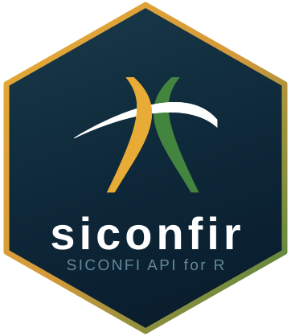

Get Budget Execution Summary Report (RREO) – English interface
Source:R/aliases.R
get_budget_report.RdEnglish-parameter alias for get_rreo(). See that function for full
details on return values and API behavior.
Usage
get_budget_report(
fiscal_year,
period,
report_type,
appendix,
sphere,
entity_id,
use_cache = TRUE
)Arguments
- fiscal_year
Integer. Fiscal year (e.g.,
2022). Maps toan_exercicio.- period
Integer. Bimester number (1–6). Maps to
nr_periodo.- report_type
Character.
"RREO"or"RREO Simplificado". Maps toco_tipo_demonstrativo.- appendix
Character. Appendix name (e.g.,
"RREO-Anexo 01"). Maps tono_anexo.- sphere
Character. Government sphere:
"M"(municipalities),"E"(states), or"U"(union). Maps toco_esfera.- entity_id
Integer. IBGE code of the entity. Maps to
id_ente.- use_cache
Logical. If
TRUE(default), uses an in-memory cache.
Value
A tibble with RREO data.
See also
get_rreo() for the original Portuguese-parameter interface.